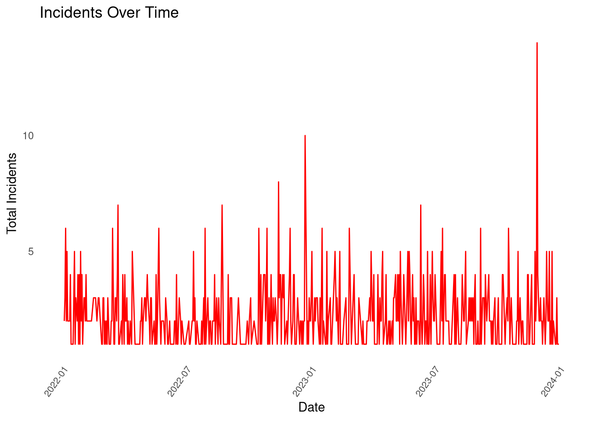
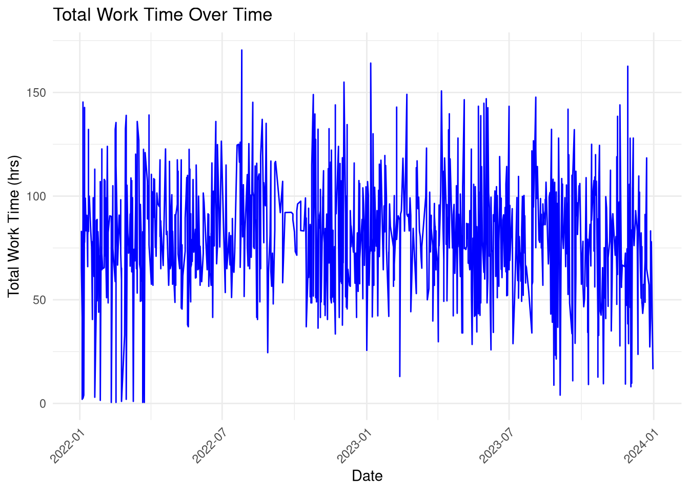
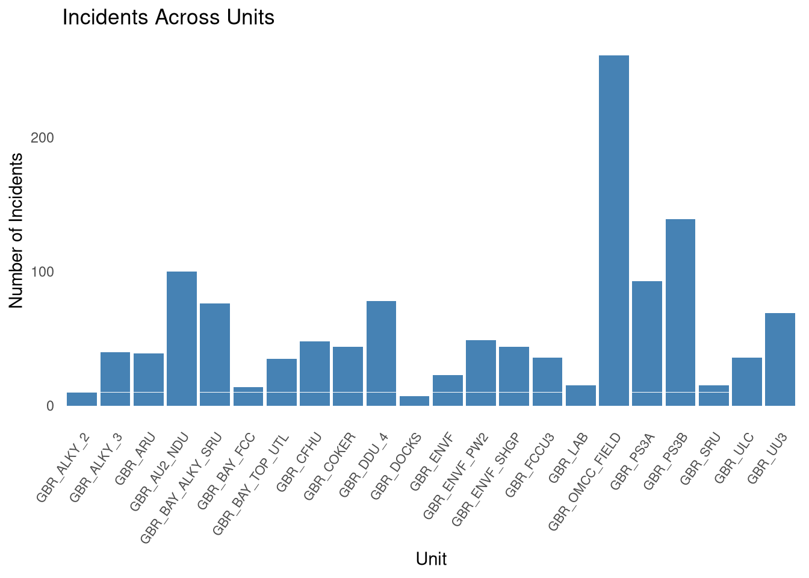
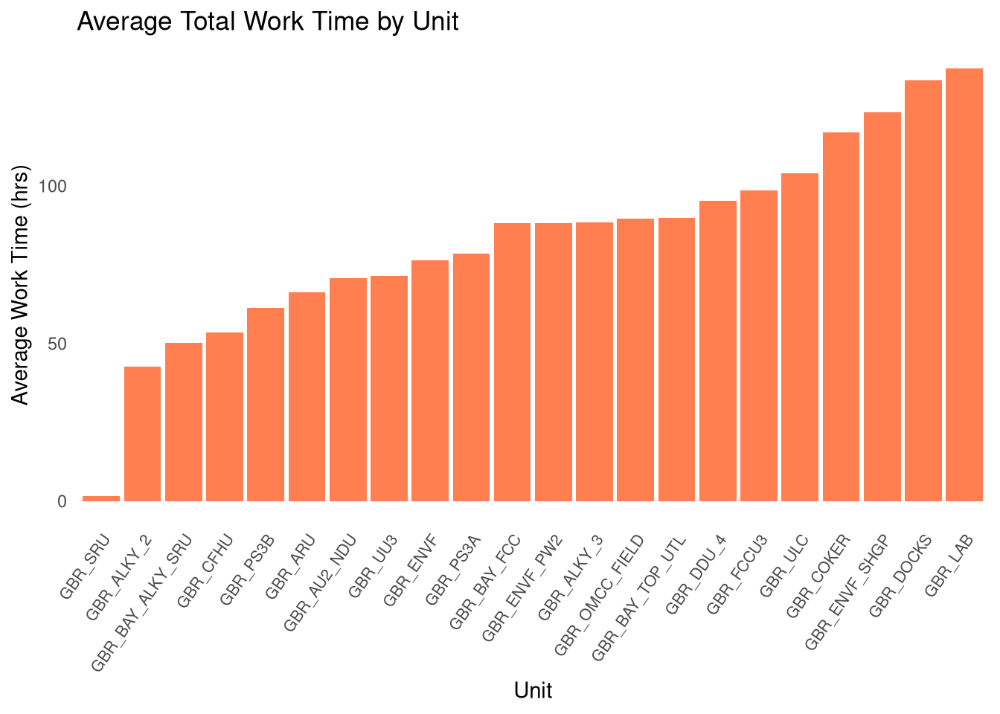
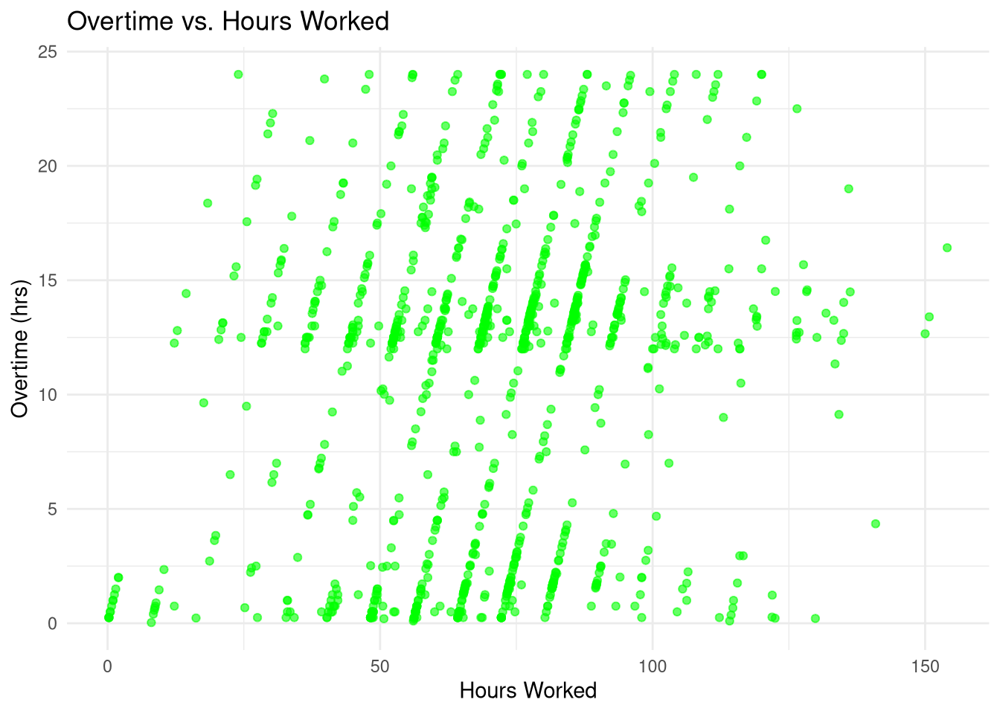

# For data importing
library(readxl)
# For data manipulation and tidying
library(tidyverse)
library(stringr)
library(dplyr)
# For date and time handling
library(lubridate)
# Quarto rendering
library(rmarkdown)
library(knitr)
# For creating visuals
library(ggplot2)Analyzing Workforce Dynamics and Safety: Insights from an Oil Refinery
Abstract
This project examines two years of oil refinery data (2022–2023) on work hours, overtime, and safety incidents, uncovering key trends through data cleaning and visualization to provide insights into workforce dynamics and safety.
Introduction
The oil and gas industry operates in a complex and high-stakes environment, where workforce dynamics and safety are critical to operational success. This project examines two years of data from January 2022– December 2023 derived from an oil refinery, focusing on employee work hours, overtime, and reported safety incidents. By cleaning and analyzing the data, this study aims to uncover meaningful patterns and trends that shed light on the relationship between workload and safety outcomes. Using visualizations to present the findings, the project provides a clear and concise overview of the data, offering insights to guide future discussions on workforce management and safety strategies.
Time to get started!
Loading Necessary Packages
Importing Data
The dataset for this project was sourced from an Excel file and imported into R using the read_excel() function from the readxl package. The imported data was then inspected and prepared for analysis through a series of cleaning and transformation steps to ensure accuracy and usability.
df <- read_excel("~/git_repos/solanillam/Project_2/Raw_Data/Copy of df_overall_final_V1.xlsx")Ok, let’s take a look at the data set.
Data Munging (cleaning)
Step 1: Data Reduction
# Removed Unnecessary Columns
df_cleaned <- df %>% select(-aud, -obs, -turnaround)
# Removed Duplicate Rows
df_cleaned <- df_cleaned %>% distinct()During the data reduction step, unnecessary columns (aud, obs, and turnaround) were removed to streamline the dataset and focus on relevant variables. Duplicate rows were eliminated to ensure the data was clean and free from redundancies, providing a solid foundation for accurate analysis.
Step 2: Data Validation
# Filtered Rows with Valid Values
df_cleaned <- df_cleaned %>%
filter(!is.na(inc) & inc != 0) %>%
filter(!is.na(ovt))
# Handled Outliers
df_cleaned <- df_cleaned %>%
filter(ovt >= 0 & ovt <= 24)Invalid rows with missing or zero incident values (inc) or missing overtime (ovt) were filtered out to ensure the dataset contained only meaningful observations. Outliers in overtime were handled by keeping only realistic values between 0 and 24 hours, maintaining the integrity of the data.
Step 3: Data Transformation
# Standardized Text Data
df_cleaned$unit <- trimws(toupper(df_cleaned$unit))
# Created New Variables
df_cleaned <- df_cleaned %>%
mutate(total_work_time = hrs + ovt)Text data in the unit column was standardized by trimming spaces and converting to uppercase for consistency. A new variable, total_work_time, was created to combine regular hours and overtime, enabling deeper analysis of workload patterns.
Findings and Results
Incident Trends Over Time

Workload Trends Over Time

Incident Distribution Across Units

Workload Variability by Unit

Relationship Between Hours Worked and Overtime
